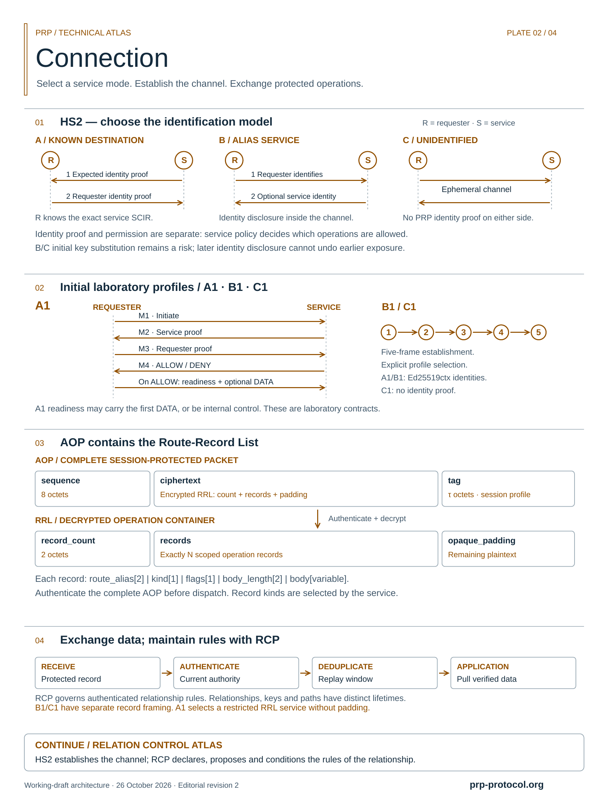
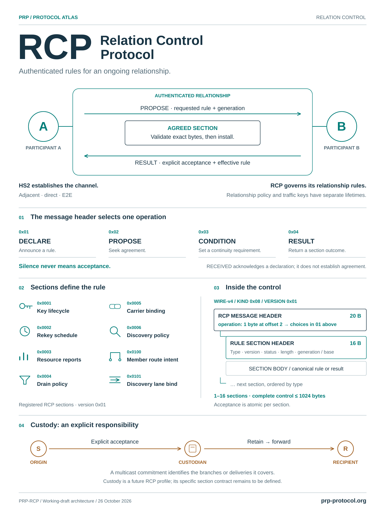
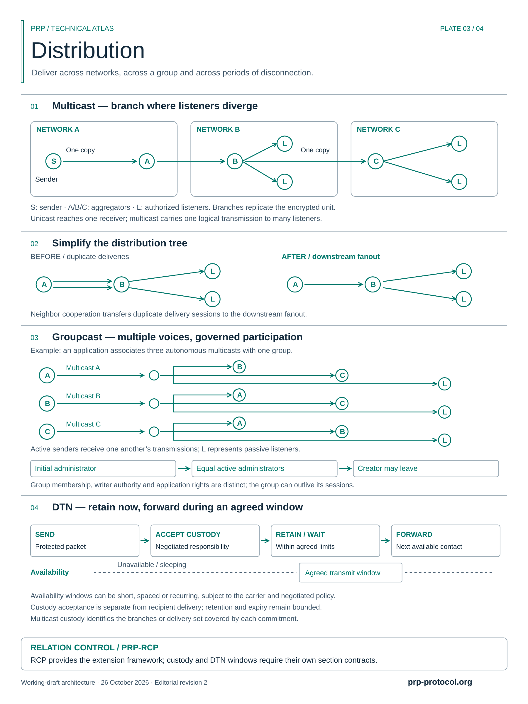
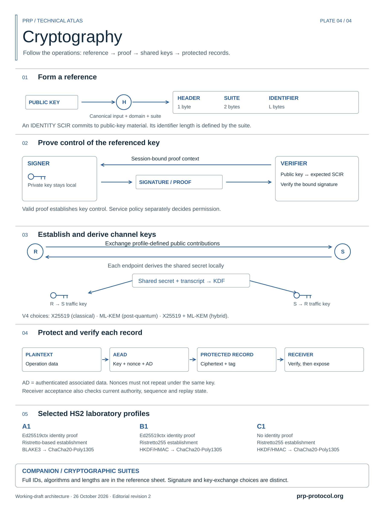
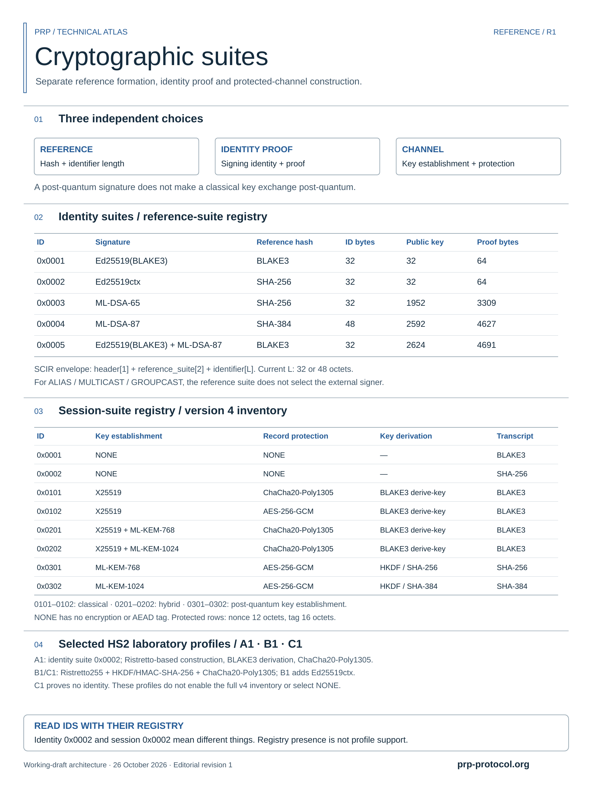

Technical reference · English · 2026-10-26-rcp-v2
PRP Protocol Atlas
Five illustrated atlases and a cryptographic suite reference. Choose a plate to inspect its larger preview or download the original files.
Working-draft educational diagrams; source-specific qualifications retained. These diagrams do not constitute implementation or security certification.
White backgrounds and outline artwork are intentional for printed boards. Each vector PDF is one page, nominally 360 × 480 mm. SVGs are scalable; PNGs are 1800 × 2400 pixels.


Connection
Channel establishment and protected operation framing.



Relation Control Protocol
Authenticated relationship rules, RCP operations, section framing and custody scope.



Distribution and DTN
Multicast, groupcast, custody and availability windows.



Cryptography
References, proofs, key establishment and record protection.



Cryptographic suites
Reference tables for identity and session suites.



PRP Editorial · Code-generated vector illustrations.
Collection descriptions and file hashes (JSON) · Protocol comparison
Historical atlas
The earlier unified Protocol Atlas v2 remains available as a historical snapshot, with its original qualifications and unchanged files.
View historical unified atlas v2 · SVG · PDF · PNG · Description and hashes